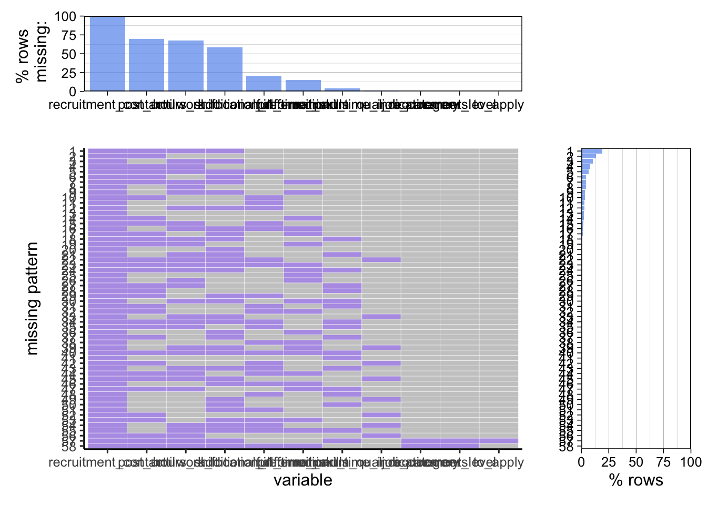

Chapter 3 Data
3.1 Sources
The primary data set we have chosen to use is the NYC Jobs from data.gov. The data-set contains data from jobs listings around NYC. The data is collected from the City of New York’s official jobs website here.
The data was first published January 8th 2020, and was most recently updated October 25th, 2022. The NYC OpenData project maintains the data. The data is available for download via csv. Thus, we intend to download the csv file and upload it directly into R.
There are two reasons that we chose this dataset: Firstly, the data was easily downloadable in a form that could be imported directly into R with little pre-processing. Secondly, it had several variables that we could explore the relationship between.There are many interesting things to discover, such as what categories have the most jobs, what kinds of jobs tend to have a higher salary, whether a higher leveljob has a higher salary, which location tends to pay more.
A brief explanation to some of the columns:
Agency: Name of the New York City agency (“agency” or “hiring agency”) where a
job vacancy exists.
Posting Type: Identifies whether a job posting is an Internal or External
posting. Internal postings are available to City employees only and external
postings are available to the general public.
Job Category: Broad Classification of where all the jobs would fall in.
Full-time/Part-Time: Time frame of a job.
Salary Range From: The beginning salary cap for that particular opening.
Salary Range To: The highest cap for that particular job opening.
Salary Frequency: The payment factor for the job, hourly or annual.
Work Location: The location of the workplace.
Job Description: A brief idea of what the job will contain.
Minimum Qual Requirements: The minimum qualifications a candidate must possess
for the job.
Preferred Skills: Optimal skills which the posting is looking for.
3.2 Cleaning / transformation
In order to clean the data we first made sure that all of the variable names were in a form that were easy to reference, no spaces or capital letters. Then we made some simplified variables, so that analysis was not so complicated. These variables included job category, agency, and job level. We had to transform the dates into a form that R would recognize. Finally, we made a new variable based on if a job posting had required skills or not.
3.3 Missing value analysis
## Recruitment Contact Post Until Hours/Shift
## 5630 3917 3795
## Work Location 1 Additional Information Preferred Skills
## 3305 1172 871
## Full-Time/Part-Time indicator Minimum Qual Requirements Job Category
## 215 64 2
## Career Level To Apply Job ID
## 2 1 0
## Agency Posting Type # Of Positions
## 0 0 0
## Business Title Civil Service Title Title Classification
## 0 0 0
## Title Code No Level Salary Range From
## 0 0 0
## Salary Range To Salary Frequency Work Location
## 0 0 0
## Division/Work Unit Job Description Residency Requirement
## 0 0 0
## Posting Date Posting Updated Process Date
## 0 0 0
It seems that the most common missing variable is recruitment_contact, with hours_shift and post_until also being quite common.